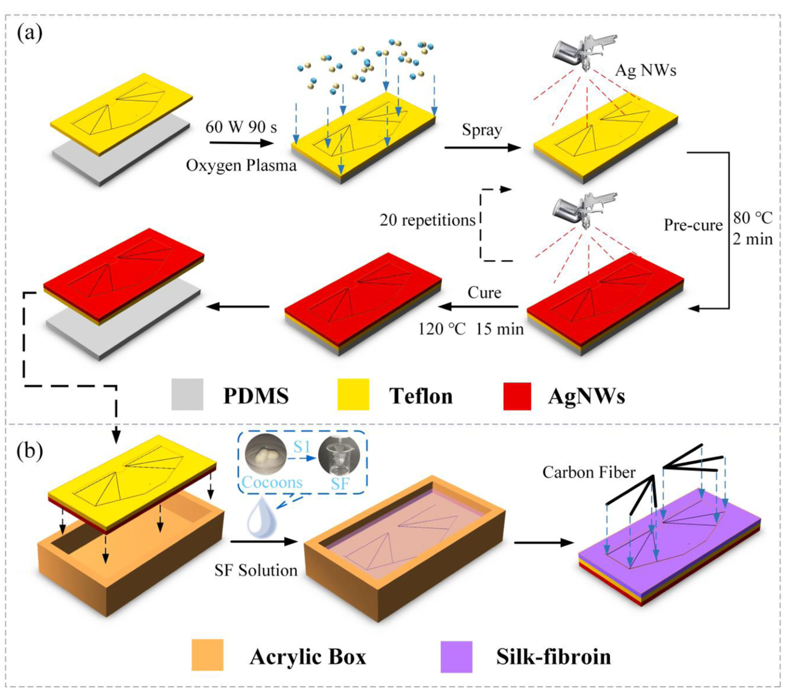
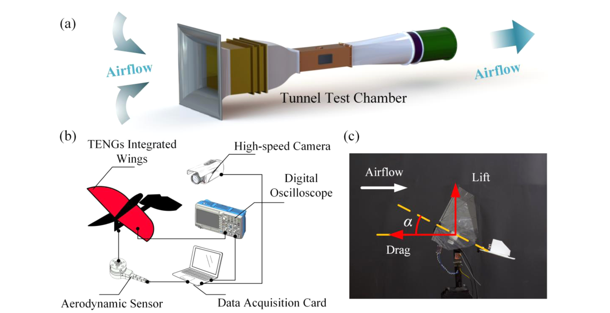
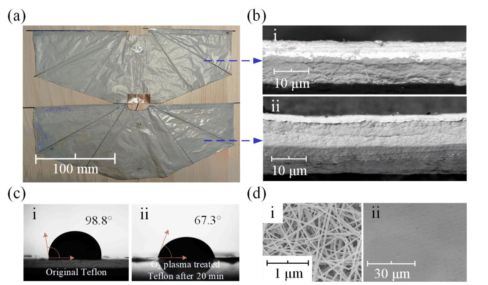
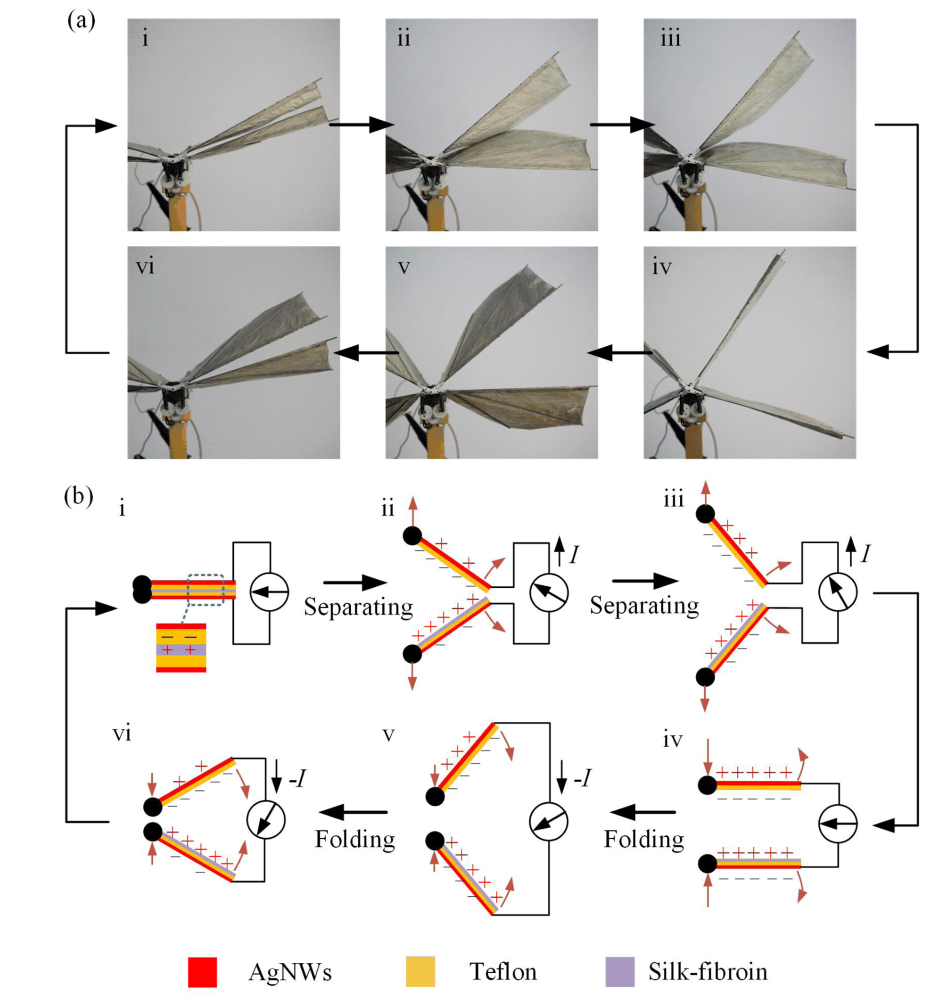
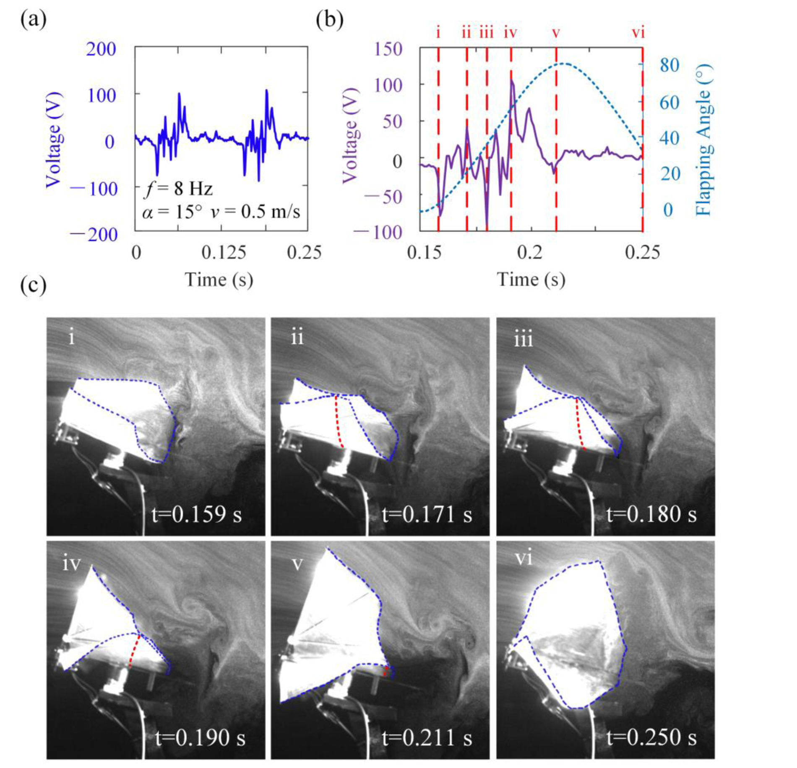
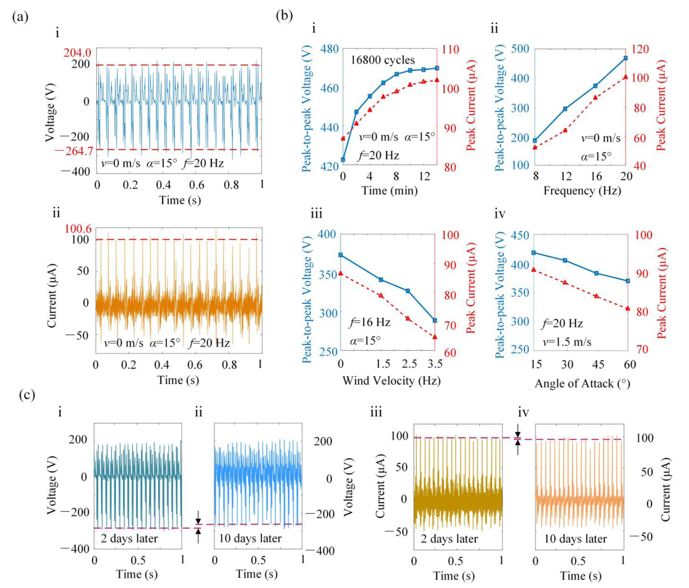
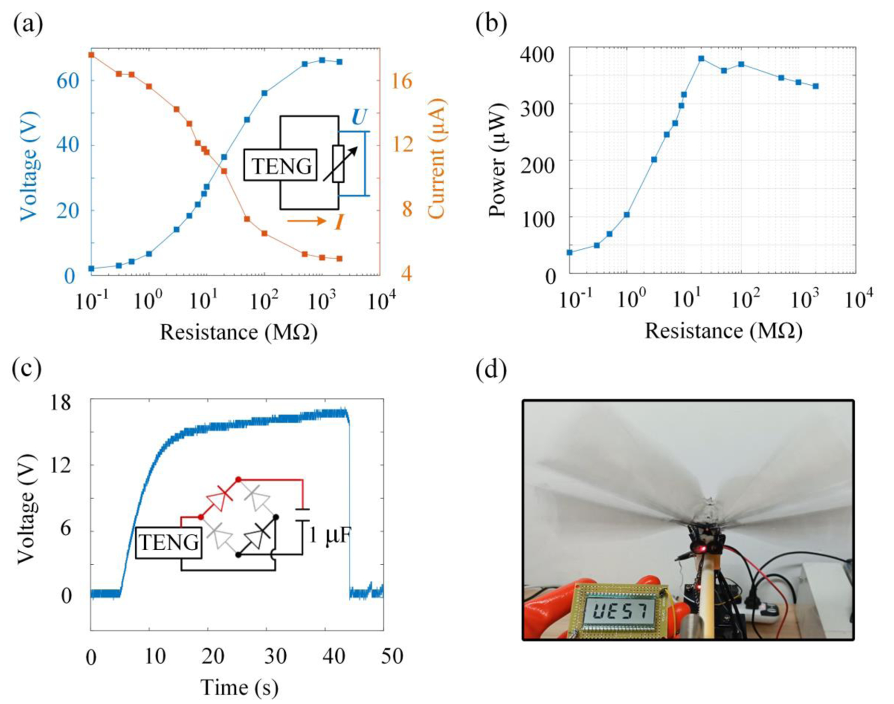
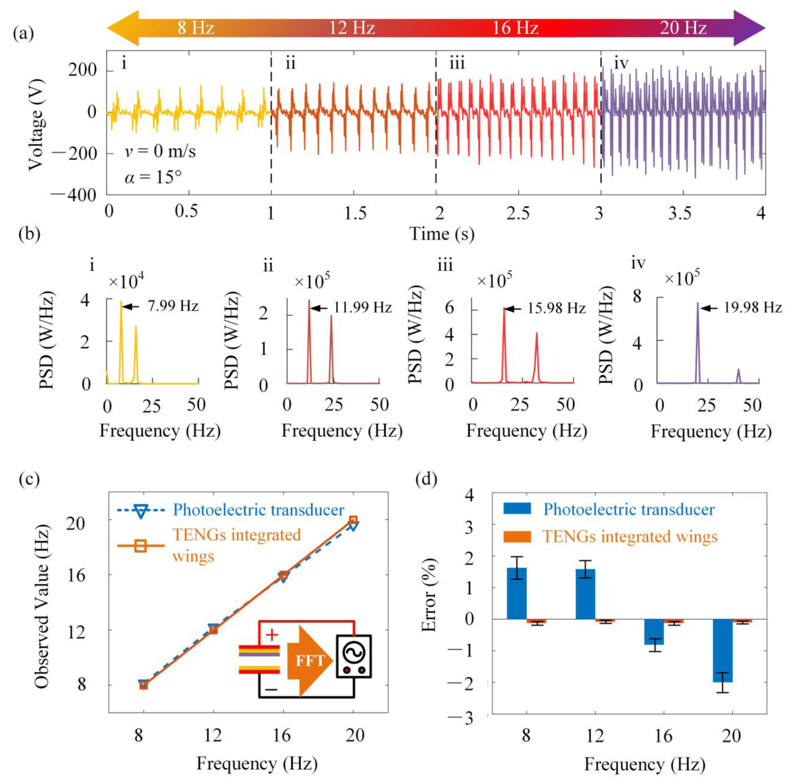
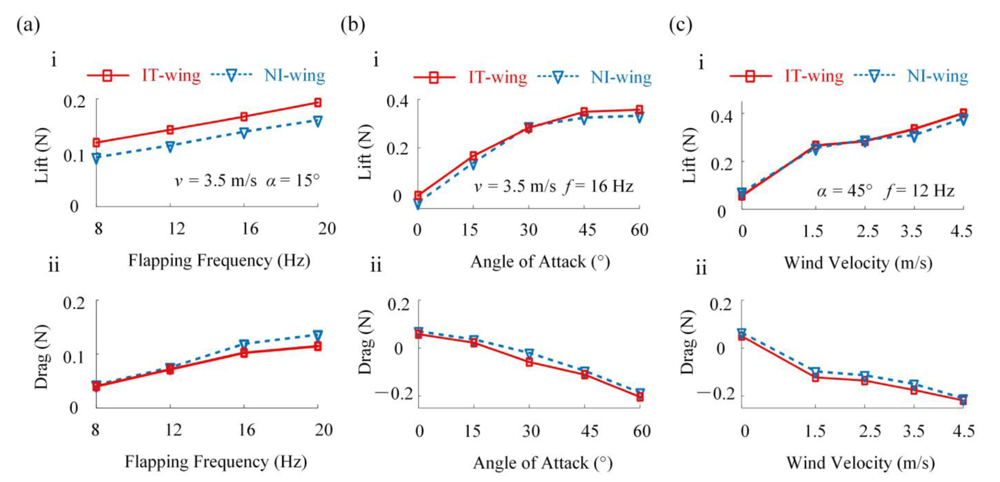

FIG. 1
材料层怎样成为机翼的一部分
本图先建立制造逻辑：加工辅助层、电极层、摩擦层和承载翼脉各有不同职责。上下翼采用不同叠层，才能在接触处构成摩擦材料对。

作者把银纳米线电极和丝素蛋白摩擦层融入薄膜翼，利用上下翼拍合、分离时原本就存在的接触运动产生电信号。风洞实验分别验证能量采集、扑动频率识别和气动力保持：一副机翼承担三种功能。关键问题随之变成：电信号中哪些变化来自扑动本身，哪些来自柔性接触与来流？
阅读依据：12 页 Nano Energy 正式版全文，完整解读正文 Fig. 1–9。补充材料和视频本轮未取得；涉及 Video S5/S6 的飞行陈述仅按正文转述。论文证明了自发电信号与频率监测，并未展示 TENG 信号进入飞控后的闭环性能提升。
这篇论文解决的是“传感器和能量采集器太重，难以装上轻小扑翼”的集成问题。它把 Teflon 薄膜同时用作翼面基底和摩擦材料，把银纳米线用作柔性电极，再用丝素蛋白形成另一种摩擦表面。上下翼在拍合阶段接触、随后分离，摩擦起电与静电感应使外电路产生周期信号；该信号既可接负载，也可经频谱分析读出扑动频率。
本图先建立制造逻辑：加工辅助层、电极层、摩擦层和承载翼脉各有不同职责。上下翼采用不同叠层，才能在接触处构成摩擦材料对。

研究需要同时回答“能否发电”和“发电后是否还能产生足够气动力”。风洞使来流、迎角和扑频成为可控制的变量。

结构图必须由实物与截面证据支撑。本图同时检查成翼、层状结构、表面润湿和导电网络。

发电需要机械运动输入。这里利用的是原本的拍合运动，摩擦起电建立表面电荷，随后位置变化引起静电感应电流。

本图是理解“翼部感知”的关键。电信号不只由翼根角度决定，还受到翼面弯曲、局部接触与时滞影响。

作者逐项扫描运行时间、扑频、风速和迎角。输出随工况改变，既意味着有感知信息，也意味着能量采集与幅值解码会受交叉影响。

负载扫描、电容充电和液晶显示把“会发电”推进到“能驱动简单负载”。仍需把电压峰、负载功率和整流后储能分开。

多峰波形仍有稳定的周期结构。作者用频谱寻找非直流基频，并用高速摄影做参考，与传统光电传感器比较。

最后回到机翼最基本的任务：产生升力与推进相关气动力。图中 IT-wing 与 NI-wing 在相同扫描条件下比较周期平均力。

本页仅针对这一篇论文独立分析。原文结果、作者转述与本页推算/建议已分别标明。原始 PDF 不随公开网页分发。
← 返回书架